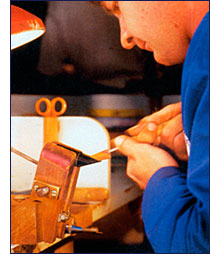
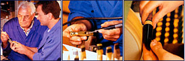
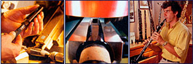

マウスピースの製造工程
均一性に優れたバンドーレン・マウスピース
マウスピースの製造工程

マウスピース製作は “ブランク”（金型）と呼ばれるものからスタートします。
このブランクを、エボナイトという名のゴムからできる非常に硬い素材で包み込んで形どりします。
マウスピースの外側の形を作るのは、バンドーレン社特製の自動成形用旋盤で行ないます。
旋盤を使う時には、マウスピースの中心部分を正しく探り当てることが重要です。製造段階ごとに、形や寸法が正確かどうか、一個一個チェックします。
仕上げにはマウスピースを磨き上げます。その後、表面の研磨を始めます。この段階から、マウスピースは種類ごとに振り分けられます。
次に、クラリネット・マウスピースにはコルクを取り付けます。耐久性と正確さを確保するために、慎重に選ばれたコルクが使われています。
フェイシングの最終的な調整は、台に据え付けたダイヤモンドカッターで行います。1センチの1万分の1の精度はあまりにも小さいので、精密さを保つために、テーブルは磨くことはありません。
各マウスピースのバッフル、ウォール、ティップ・レールは手で仕上げます。
名職人たちが、プロの厳しいテストに合格するよう各マウスピースを仕上げ、調整します。


（表面を除いて）しみやゆがみを取り除くために、マウスピースを最後にもう一回研磨します。
それからバンドーレンの金色のロゴを、モデルナンバーとともに押します。
プロの演奏家たちが品質、サウンド、ピッチに関してマウスピースをテストします。
最後にもう一度チェックし、世界中に向けて出荷するために梱包されます。